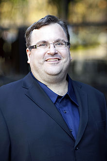

Hoffman was born in Palo Alto, California, to Deanna Ruth (Rutter) and
William Parker Hoffman, Jr., and grew up in Berkeley, California. His paternal
great-great-great-grandfather was Theophilus Adam Wylie, a Christian
Presbyterian minister and Indiana University president pro tempore. Reid's uncle
Eric Hoffman is a writer.
Hoffman himself describes how he was an avid tabletop roleplaying gamer as a
child.His first paid job (at age 12) was as an editor at the game company
Chaosium, then based in Oakland near his home.Although 14 years old at the time,
Hoffman's name features on the box of Chaosium's RuneQuest role-playing game
release 'Borderlands' (1982), receiving equal billing with such prominent game
designers as Steve Perrin, Sandy Petersen and Greg Stafford.
Hoffman attended high school at The Putney School, where he farmed maple syrup,
drove oxen and studied epistemology. He graduated from Stanford University in
1990, where he won both a Marshall Scholarship and a Dinkelspiel Award, with a
B.S. in Symbolic Systems and Cognitive Science.He went on to earn an M.A. in
Philosophy from Wolfson College, Oxford University in 1993 as a Marshall
Scholar.
While in college, according to Hoffman, he formed a conviction that he wanted to
try to influence the state of the world on a large scale. He saw academia as an
opportunity to make an "impact", but later realized that an entrepreneurial
career would provide him with a larger platform.
"When I graduated from Stanford
my plan was to become a professor and public intellectual. That is not about
quoting Kant. It's about holding up a lens to society and asking 'who are we?'
and 'who should we be, as individuals and a society?' But I realised academics
write books that 50 or 60 people read and I wanted more impact."
With that in mind, Hoffman pursued a career in business and entrepreneurship. He
joined Apple Computer in 1994, where he worked on eWorld, an early attempt at
creating a social network.
eWorld was acquired by AOL in 1996. He later worked
at Fujitsu before co-founding his first company - SocialNet.com in 1997. It
focused “on online dating and matching up people with similar interests, like
golfers who were looking for partners in their neighborhood.”Peter Thiel has
said SocialNet.com was “literally an idea before its time. It was a social
network 7 or 8 years before that became a trend.”
While at SocialNet, Hoffman was a member of the board of directors during the
founding of PayPal, an electronic money transmission service. In January 2000,
he left SocialNet and joined PayPal full-time as the company's COO.
Allen Blue,
whom Hoffman hired at PayPal, said that “PayPal had to scratch and claw for
every advantage it had, and Reid became an expert at competing effectively in an
extremely competitive environment." Hoffman was responsible for all external
relationships for PayPal, including payments infrastructure (VISA, MasterCard,
ACH, WellsFargo), business development (eBay, Intuit, and others), government
(regulatory, judicial), and legal. Peter Thiel, Hoffman's boss at PayPal, has
said that Hoffman “was the firefighter-in-chief at PayPal.
Though that
diminishes his role because there were many, many fires.” At the time of
PayPal's acquisition by eBay for $1.5B in 2002, he was executive vice president
of PayPal.